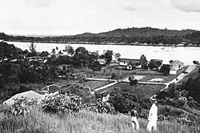
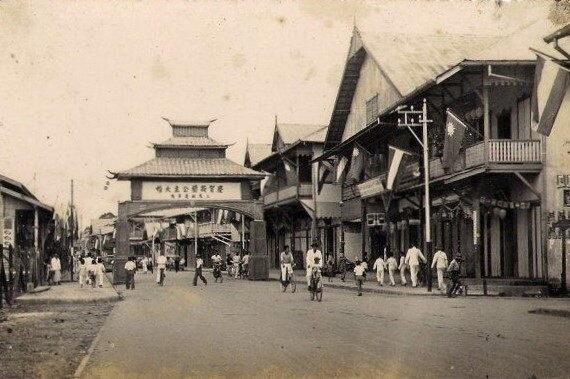

Pada saat pecah perang Gowa, pasukan Belanda dibawah Laksamana Speelman memimpin
Angkatan Laut menyerang Makasar dari laut, sedangkan Arupalaka yang membantu Belanda
menyerang dari daratan. Akhirnya Kerajaan Gowa dapat dikalahkan dan Sultan Hasanuddin
terpaksa menandatangani Perjanjian yang dikenal dengan "PERJANJIAN BONGAJA" pada
tanggal 18 Nopember 1667. Sebagian orang-orang Bugis Wajo dari Kerajaan Gowa yang
tidak mau tunduk dan patuh terhadap perjanjian Bongaja tersebut, mereka tetap meneruskan
perjuangan dan perlawanan secara gerilya melawan Belanda dan ada pula yang hijrah ke
pulau-pulau lainnya diantaranya ada yang hijrah kedaerah Kalimantan Timur untuk mengabdikan
diri pada Kerajaan Kutai, yaitu rombongan yang dipimpin oleh La Mohang Daeng Mangkona
(bergelar Poa Ado yang pertama), kedatangan orang-orang Bugis Wajo dari Kerajaan Gowa
itu diterima dengan baik oleh Sultan Kutai.
Sesuai dengan perjanjian, bahwa orang-orang Bugis Wajo harus membantu segala kepentingan
Raja Kutai, terutama dalam menghadapi musuh. Semua rombongan tersebut memilih daerah
sekitar Muara Karang Mumus (daerah Selili Seberang) tetapi daerah ini menimbulkan
kesulitan didalam pelayaran karena didaerah yang berarus putar (berulak) dengan banyak
gunung-gunung (Gunung Selili), yaitu pada sekitar tahun 1668. Dengan rumah rakit yang berada
diatas air, harus sama tinggi antara rumah satu dengan yang lainnya, melambangkan tidak ada
perbedaan derajat apakah Bangsawan atau tidak, semua sama derajatnya dengan lokasi yang berada
disekitar muara sungai yang berulak dan dikiri kanan sungai daratan rendah atau "renda"
diperkirakan dari istilah inilah lokasi permukaan baru tersebut dinamakan "SAMARENDA" atau
lama kelamaan ejaannya menjadi "SAMARINDA".
Orang-orang Bugis Wajo ini bermukim di Samarinda pada permulaan tahun 1668 atau tepatnya pada
bulan Januari 1668 yang dijadikan patokan untuk menetapkan hari jadi Kota Samarinda. Telah
ditetapkan pada peraturan Daerah Kotamadya Daerah Tingkat II Samarinda Nomor : 1 tahun 1988
Tanggal 21 Januari 1988, pasal 1 berbunyi "Hari jadi Kota Samarinda ditetapkan pada tanggal
21 Januari 1668 M bertepatan dengan Tanggal 5 Sya’ban 1078 H". Penetapan ini dilaksanakan
bertepatan dengan peringatan hari jadi Kota Samarinda ke 320 pada Tanggal 21 Januari 1988.